Control and Automation Engineer | Developer
Focused on C, Python and MATLAB. Develops algorithms for control systems and data analysis. Experienced with pandas, NumPy, SciPy, scikit-learn, matplotlib, python-control, CVXPY.
PCB design of a 12V relay module with optocoupler (KiCad).
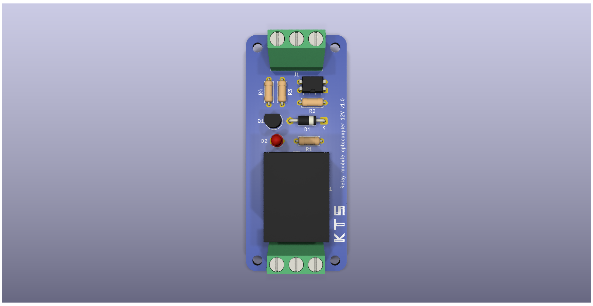
Relay module 24v 4PCB design of a four-channels 24V relay module (KiCad).
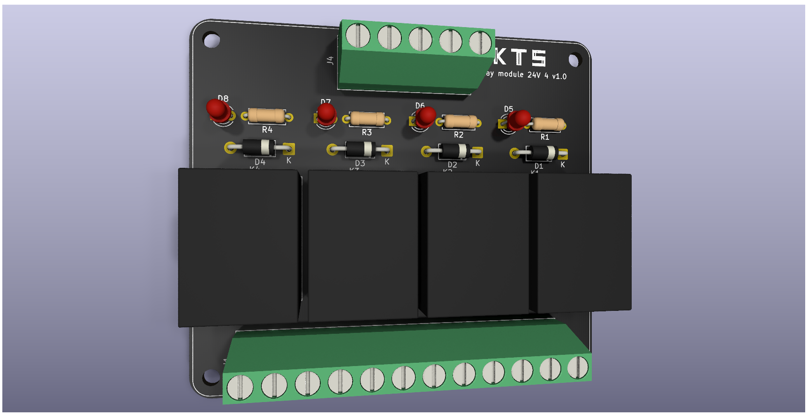
Voltage signal conditionerPCB design of a voltage signal conditioner (EAGLE).
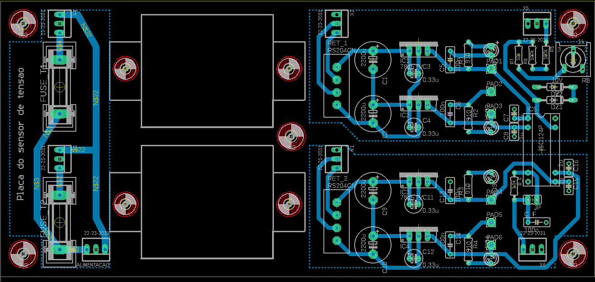
Voltage difference detectorPCB design of a voltage difference detector (EAGLE).
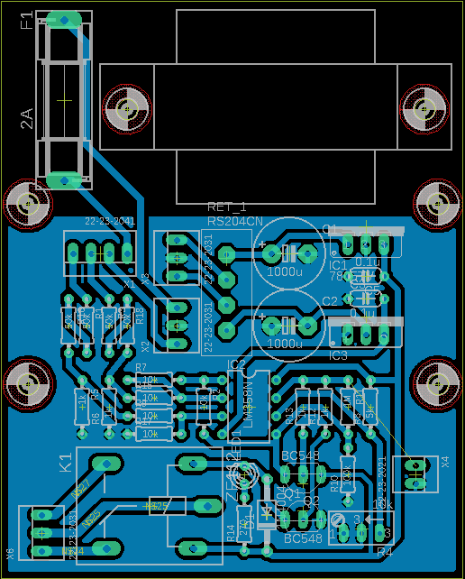
An experiment for controlling a DC motor angular position.
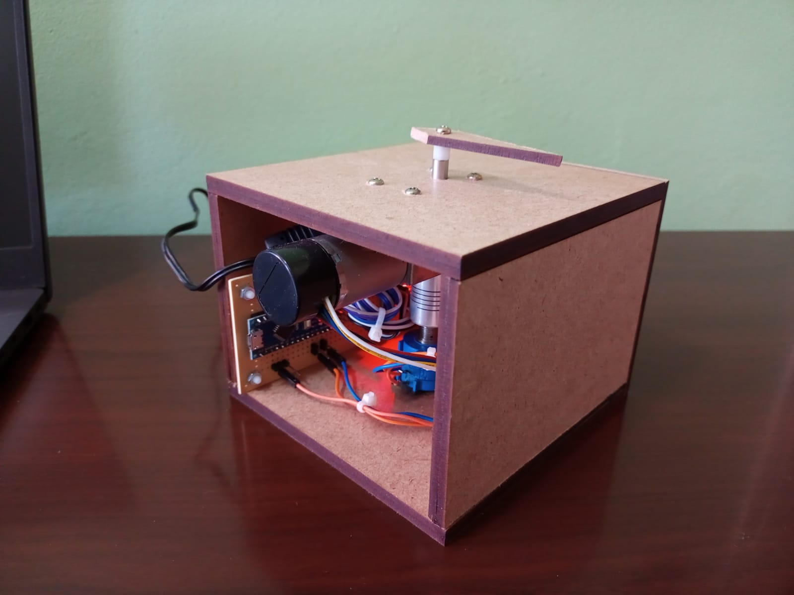
WiFi experimentsAn IoT smart-switch experiment for remotley controlling relays.
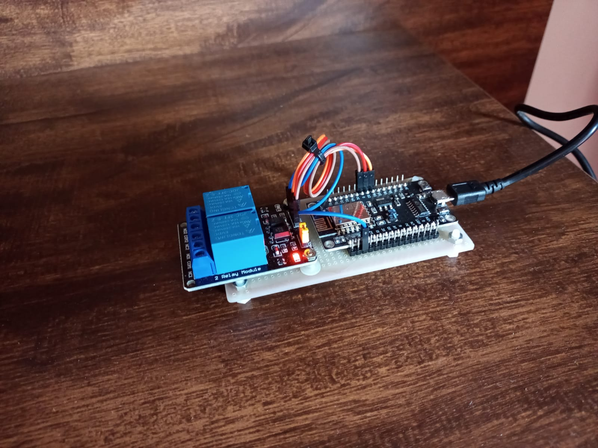
Repository of Python codes for designing continuous-time PMR controllers and current feedback gains for UPS systems.
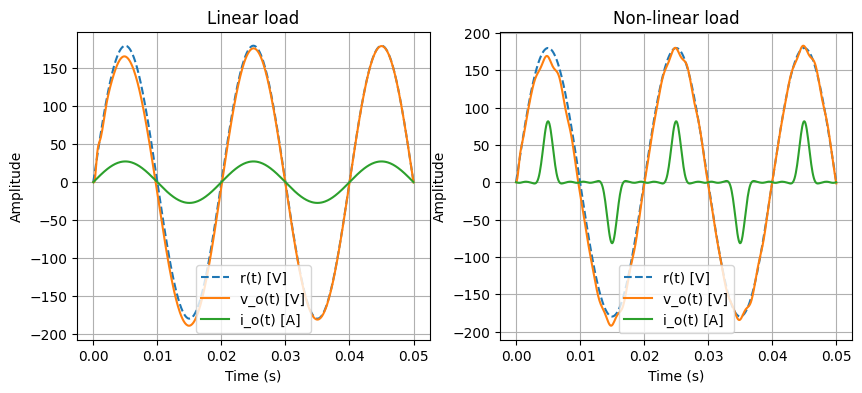
A code for designing continuous-time robust PMR controllers and current feedback gains for UPS systems.
A code for designing discrete-time PMR controllers and current feedback gains for UPS systems.
A code for designing discrete-time PMR controllers and current feedback gains for UPS systems.
A Python tool for backtesting and trading signals on B3.
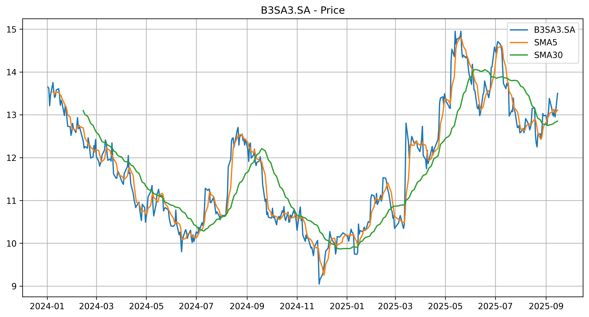
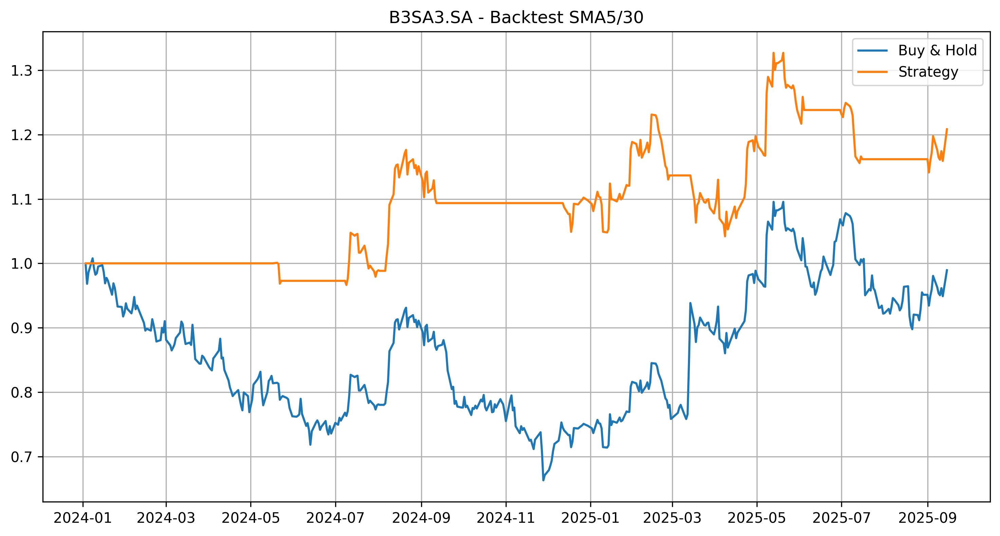
Market ForecasterA Python tool for trading signals on global markets based on machine learning.
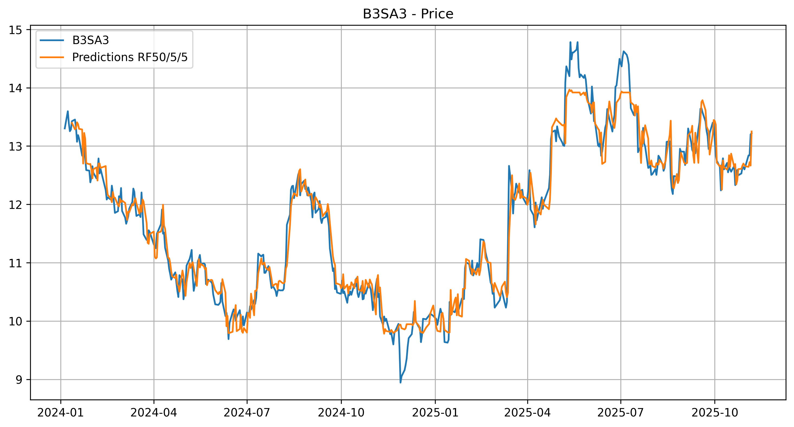
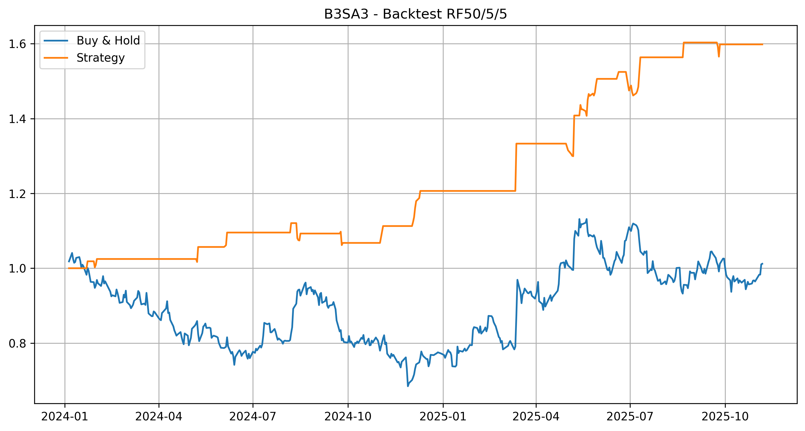
Attitude Control SystemA Python tool for simulation and control of attitude in spacecrafts.
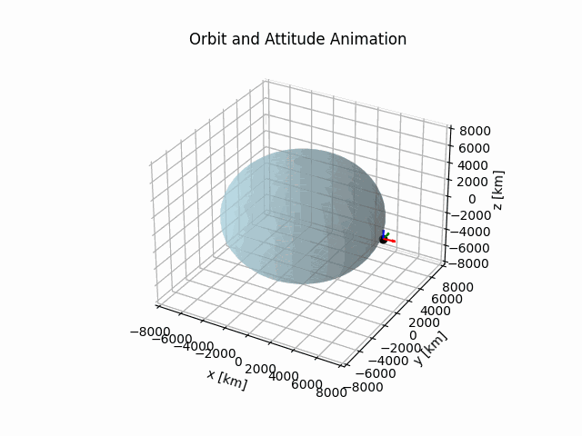
MATLAB-PSIM simulation and control of UPS system.
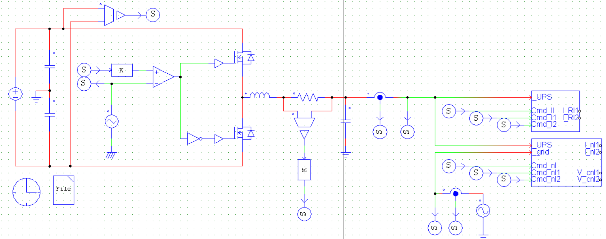
Grid-tied inverter simulationMATLAB-PSIM simulation and control of grid-tied inverter.
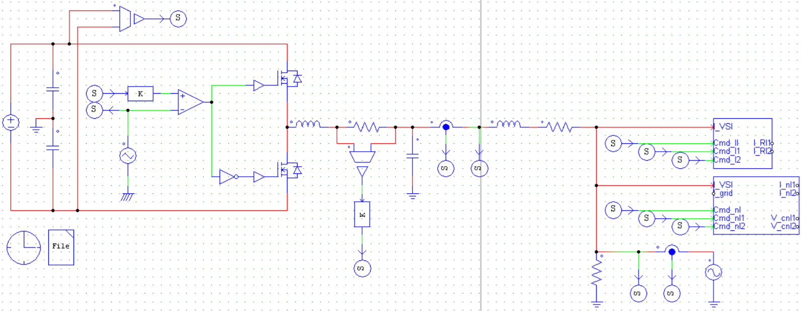
Optimization techniquesRepository of MATLAB codes for mathematical and heuristic optimization.
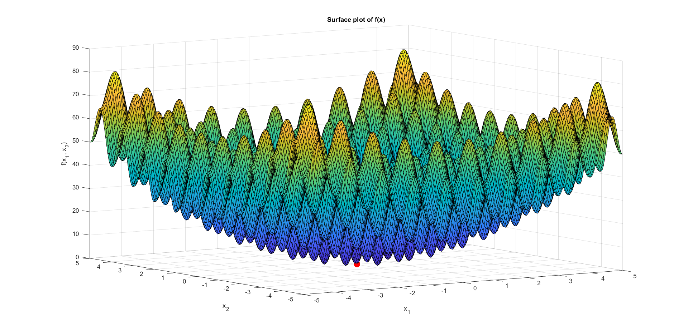
A gradient descent algorithm for unconstrained mathematical optimization, allowing to find the minimum of a differentiable multivariable function.
A hill climbing algorithm for heuristic optimization, allowing to find the minimum of a multivariable function.
A simulated annealing algorithm for heuristic optimization, allowing to find the global minimum of a multivariable function.
Repository of MATLAB codes for state estimation and filtering.
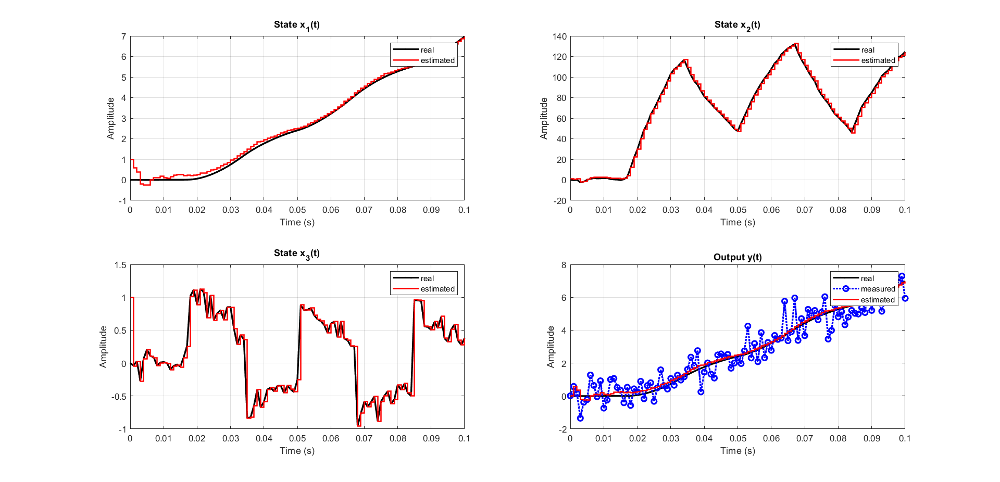
A code to compute the Kalman optimal gain and MMSE state estimates of a system.
A code to compute the Kalman optimal gain and MMSE state estimates of a nonlinear discrete-time system
A MATLAB code for designing robust PMR controllers and current feedback gains for UPS systems.
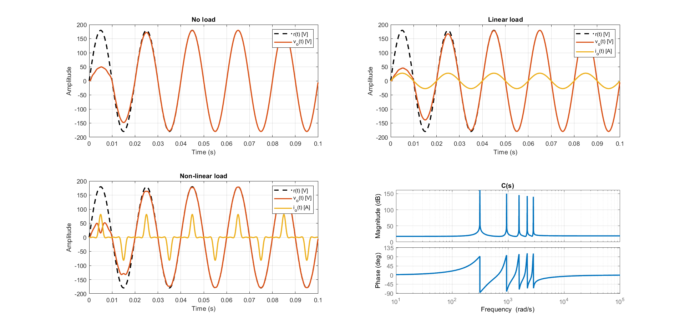
PID-based robust designA MATLAB code for designing robust PID-based controllers and current feedback gains for UPS systems.
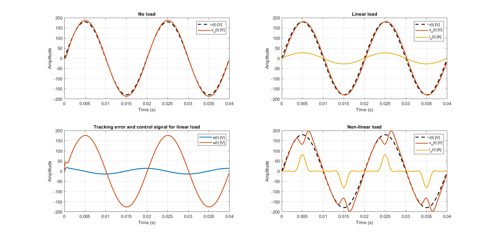
Control systemsRepository of MATLAB codes for control systems: compute state-feedback and output-feedback gains.
If you are interested and would like to get in touch for a specific project, contact me through any of the links: